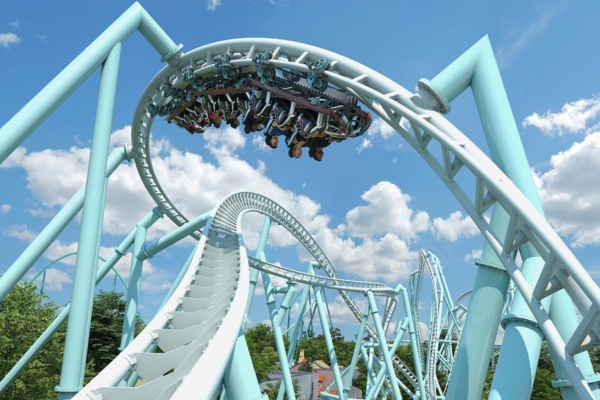

2024年8月8日，位于多伦多郊区旺市的加拿大奇幻乐园揭幕该游乐园新的过山车AlpenFury。（加拿大奇幻游乐园） 【2024年08月09日讯】（记者楚方明多伦多报导）加拿大奇幻乐园周四（8月8日）上午宣布，将于2025年推出一款全新过山车——阿尔卑斯山的愤怒（AlpenFury）。该游乐园称，AlpenFury过山车是“加拿大最长、最高、速度最快的过山车”。这是该游乐园第19座过山车。
该游乐园介绍，这款最新发布的过山车全长1,000米，时速可达115公里，需要经历9次翻转，是北美所有过山车中翻转次数最多的过山车。首次启动时，乘客将送到50米高空。
在该过山车上，可运行两列车，每列车最多可搭载18名乘客，运行持续时间为1分20秒。
加拿大奇幻乐园总经理利格特（Phil Liggett）在声明中表示：“AlpenFury 是世界级游乐项目，我们很高兴它能为游客带来独特的刺激体验。它从奇幻山上冲上去，然后连续穿越9个倒转山峰，这将是游客们永生难忘的体验。”
该游乐园还说，这座新的过山车将成为游乐园内阿尔卑斯山区（Alpenfest）的标志性景点，阿尔卑斯山区将于明年正式被指定为主题公园区。
加拿大奇幻乐园公园在声明中写道：“在这个园区，游客们将参加庆祝冰与火的神秘结合。”
今年早些时候，该游乐园关闭了已有26年历史的跳伞游乐设施“极限天空飞行者”（Xtreme Skyflyer）。该游乐设施已经有120万人次乘坐。
购买2025年金卡通行证的公园游客可在2025年无限次乘坐AlpenFury过山车。
责任编辑：文芳